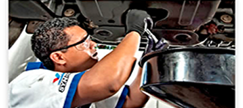
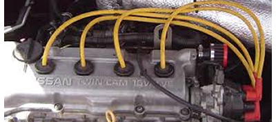

Este sensor debe ser revisado y limpiado con el remplazo del filtro de aire. La importancia de este sensor consiste en que es el encargado de informar a la computadora la cantidad de aire que esta ingresando al motor para llevar a cabo la mezcla correcta de aire y gasolina.
Esta válvula es normalmente lavada y ajustada junto con el lavado de garganta. Es la encargada del control de marcha lenta del automóvil.
Los cables de bujías sufren carbonización por el paso constante de corriente por los mismos. La resistencia del carbón contra el metal es mucho mayor, por lo que los cables deberán estar en óptimas condiciones para evitar trastornos al sistema de encendido de la computadora.
